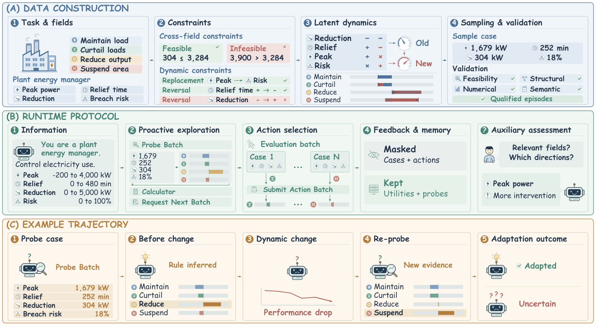
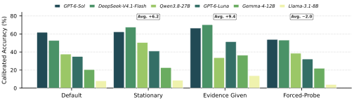
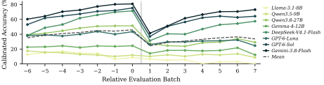

Proactive exploration
Agents decide when, what, and how much to probe. No task-completion objective points to the relevant fields, and no evidence is supplied before the agent asks for it.
Benchmarking LLM Agents for Proactive Exploration and Test-time Adaptation in Evolving Environments
Most benchmarks either hand the agent the evidence it needs, leak that evidence from the environment, or keep the underlying environment fixed. AdaExploreBench removes all three shortcuts: the agent must design its own probes, infer a latent decision rule from utility feedback, and notice when a previously valid rule stops explaining the outcomes.
Large Language Model (LLM) agents are increasingly deployed in unfamiliar and evolving environments, requiring them to proactively explore, understand, and adapt to environmental dynamics. However, existing benchmarks rarely test whether agents can proactively discover how an environment works and adapt as it evolves. To address this gap, we introduce AdaExploreBench, a benchmark for proactive exploration and test-time adaptation in evolving environments. By instantiating environmental dynamics as hidden rules, AdaExploreBench requires agents to actively acquire evidence and infer the rules.
Under implicit rule drift, the latent rule changes without announcement, requiring agents to detect from degraded performance that prior knowledge is stale and re-explore. Experiments on eight leading LLMs show that proactive and adaptive exploration remain challenging: GPT-6-Sol achieves only 61.9% calibrated accuracy, while providing sufficient evidence or removing rule drift improves average performance significantly by close to 10%. These results reveal a critical bottleneck in current LLM agents: they can often reason effectively from informative evidence once it is available, but struggle to actively acquire the right evidence and recognize when previously acquired evidence is no longer valid.
Agents decide when, what, and how much to probe. No task-completion objective points to the relevant fields, and no evidence is supplied before the agent asks for it.
Latent rules change within the same family without notification. Agents must detect that prior knowledge is stale, then re-explore and revise their hypotheses.
Evaluation cases arrive in small batches, producing a performance curve over the whole interaction rather than a single aggregate end score.

Episodes span finance, healthcare, cybersecurity, and manufacturing, with every domain covering all four rule families. An LLM-assisted pipeline builds field catalogs and latent dynamics, then filters candidates through structural, numerical, and semantic validation and a review of field realism, change plausibility, and distractor quality. The release contains 256 test and 1,024 training episodes.
Each episode alternates exploration windows with evaluation batches. Agents may design probe cases and observe utilities for all four actions, or request the next batch. They then submit actions for the revealed cases and receive utility feedback. Evaluation history is masked by default, while probe observations and realized utilities remain in context; a calculator supports numerical reasoning.
Drift stays within the family: one relevant factor is replaced and another factor's direction is reversed, without announcement. Auxiliary assessments before the change and at episode end measure factor and change recognition. They are excluded from the interaction context, so they diagnose understanding without supplying evidence.
All four settings use the same episodes and four ordered actions. Rows are sorted by calibrated accuracy within each setting.
Main results
Bold and underline apply only to metrics where higher is better; probe counts are descriptive and are never highlighted. Dashes mark metrics that are undefined in a setting.
Ten takeaways from the paper. Statements are quoted verbatim; each summary distills the supporting paragraph.


Sample episodes from the test split. Switch domains to inspect the scenario, the four actions, the field catalog, and representative pre-change cases.
The browser shows one episode per domain. The full dataset — 256 test and 1,024 training episodes — is available on Hugging Face.
The interactive browser needs assets/data/episodes.json. Regenerate it with
python3 website/scripts/build_data.py, or browse the full release on
Hugging Face.
If you find AdaExploreBench helpful, please kindly cite as:
@article{wang2026adaexplorebench,
title={AdaExploreBench: Benchmarking LLM Agents for Proactive Exploration and Test-time Adaptation in Evolving Environments},
author={Wang, Rui and Lai, Zishen and Liu, Jiayu and Qian, Cheng and Kim, Jeonghwan and Wang, Heng and Zhang, Xuejun and Liu, Jiateng and Li, Bingxuan and Wu, Shujin and Zong, Qing and Zheng, Tianshi and Li, Chunyang and Lin, Qihan and Li, Chen and Guo, Dadi and Chen, Xiusi and Song, Yangqiu},
journal={arXiv preprint arXiv:2610.25950},
year={2026}
}